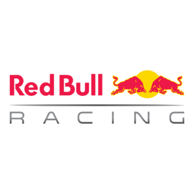
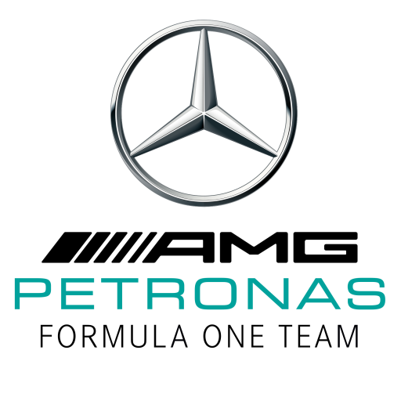
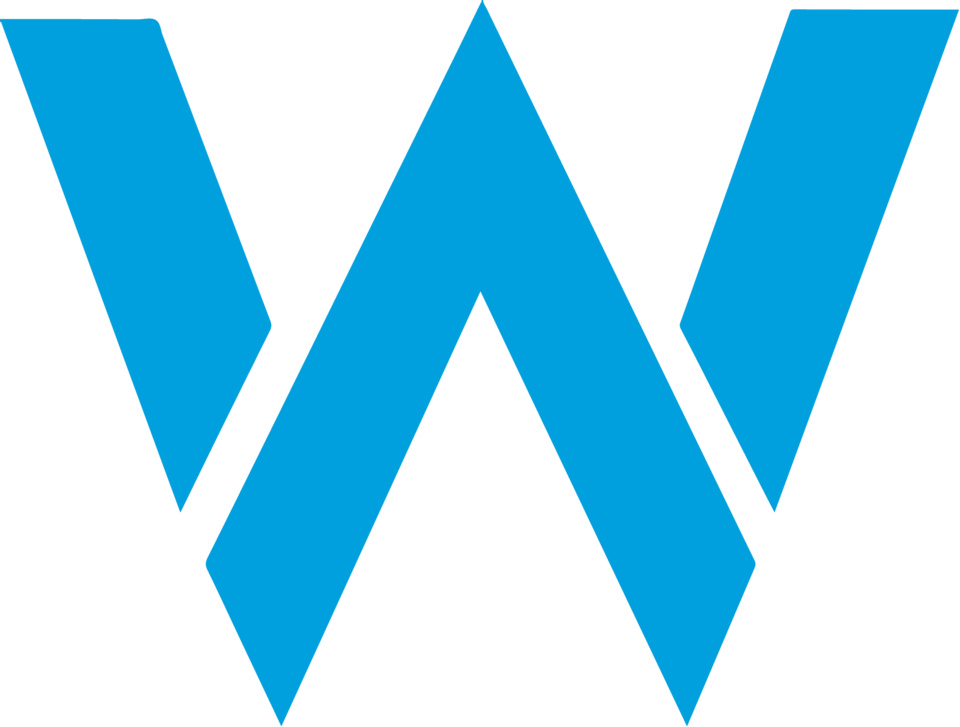
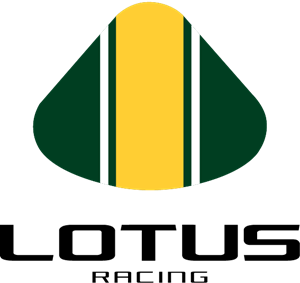
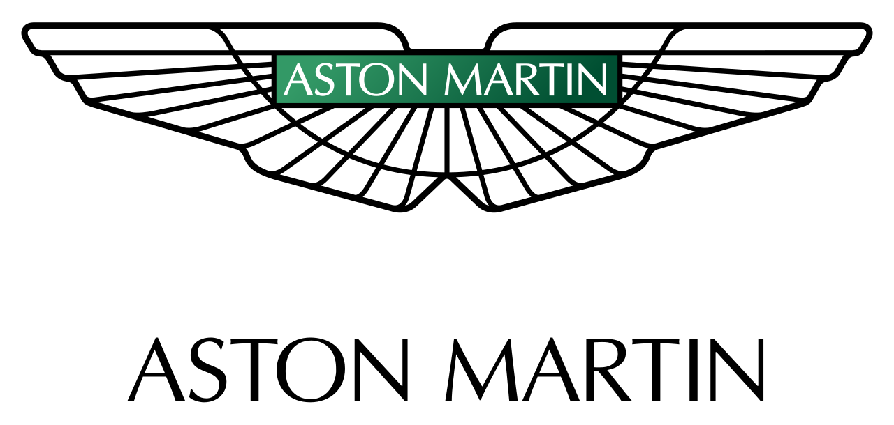

La Scuderia más icónica de la F1. Único equipo presente en todas las temporadas desde el inicio del campeonato. El cavallino rampante y el rojo de Maranello son el símbolo más reconocible del automovilismo mundial. Campeones con Fangio, Lauda, Schumacher y Räikkönen.

De bebida energética a potencia dominante de la F1. Red Bull irrumpió en 2005 y en pocos años se convirtió en el equipo a batir. Con Vettel logró cuatro dobles consecutivos (2010–2013) y con Verstappen repitió la hazaña en 2022–2024, con el RB19 como uno de los monoplazas más dominantes de toda la historia.

La mayor hegemonía de la era moderna: ocho títulos consecutivos entre 2014 y 2021. La Flecha de Plata y su revolucionario motor híbrido V6 turbo fueron imbatibles durante casi una década. Lewis Hamilton ganó seis de sus siete mundiales vistiendo el plateado de Mercedes.

Uno de los equipos más laureados e históricos de la F1. El McLaren MP4/4 de 1988 ganó 15 de 16 carreras con Senna y Prost, una cifra todavía imbatida. Tras años de dificultades, Lando Norris y Oscar Piastri devolvieron el naranja papaya a la vanguardia de la parrilla en 2024.

El equipo privado más exitoso de la historia de la F1. Frank Williams construyó un imperio con pilotos como Mansell, Prost, Hill y Villeneuve. El FW14B de 1992 es considerado uno de los coches más avanzados de su época, dominando la temporada con una tecnología muy por delante de sus rivales.

Lotus fue la escudería más innovadora de la historia de la F1. Colin Chapman revolucionó el diseño de monoplazas con el chasis monocasco, el efecto suelo y los alerones. Campeones con Clark, Hill, Rindt, Fittipaldi y Andretti; su legado técnico sigue presente en cada F1 actual.

El regreso de Aston Martin a la F1 como equipo en 2021 fue uno de los eventos más esperados del paddock. Con la llegada de Fernando Alonso en 2023 y la inversión del magnate Lawrence Stroll, el equipo verde de Silverstone aspira a competir por el título en los próximos años.